БЕЛАЯ СОВА / МАСТЕРСКАЯ · 19 НОЯБРЯ 2026Как читается герой на склоне
Слева — прежняя версия, справа — обновление. Одна траектория и одна камера: можно поставить на паузу и сравнить положение доски, лап и корпуса.
Скачать видеоПовороты в начале, отрыв на отметке 0:02,4, посадка — на 0:03,2. Каждая половина снята в браузере при 375 × 667. Частота записи — 15 кадров/с; это не замер FPS игры.
Поворот, прыжок и приземление покадрово
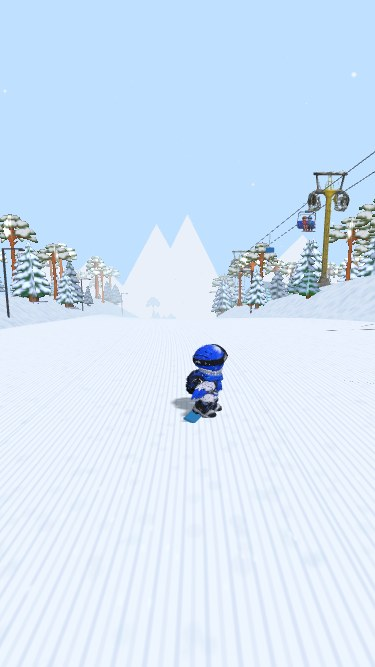
Поворот / до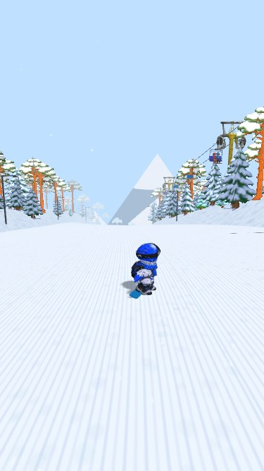
Поворот / после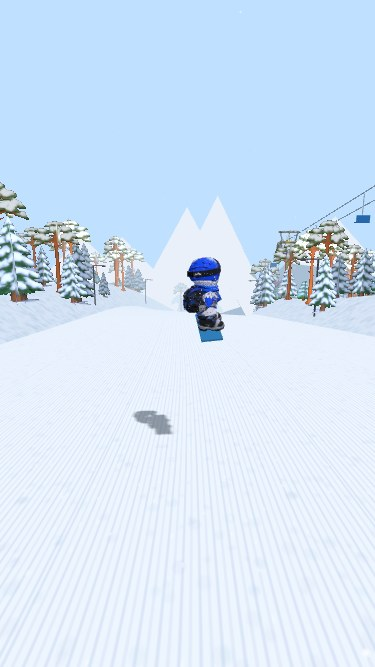
Прыжок / до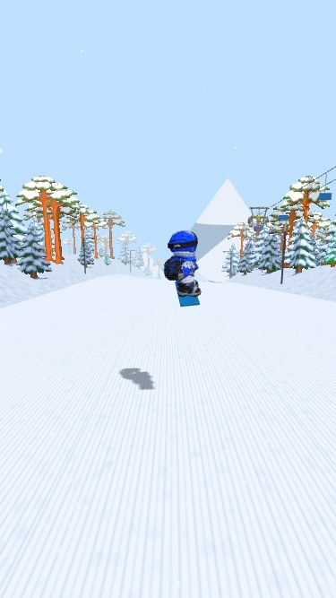
Прыжок / после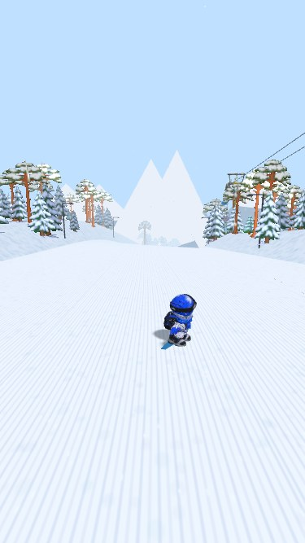
Посадка / до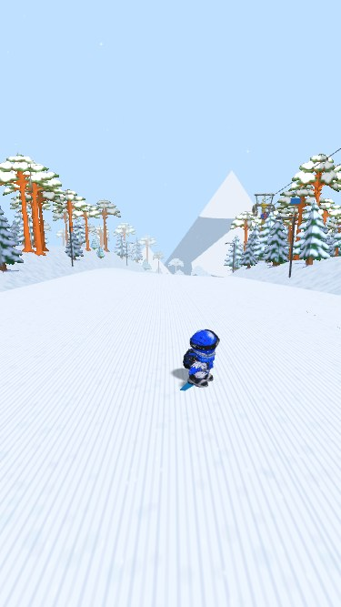
Посадка / послеГерои в меню и на трассе
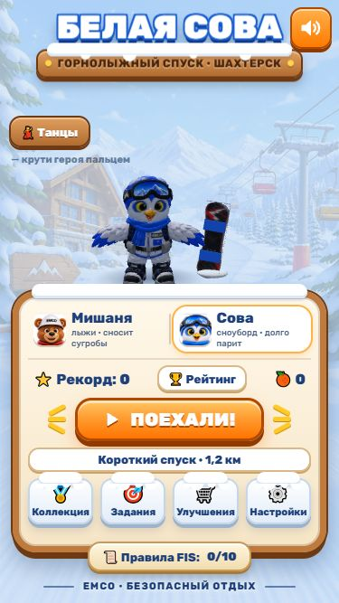
Сова / прежнее освещение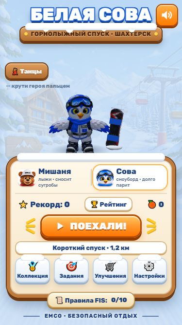
Сова / обновление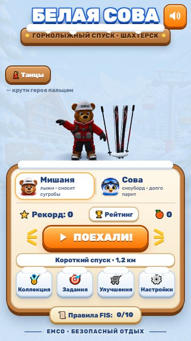
Мишаня / приветствие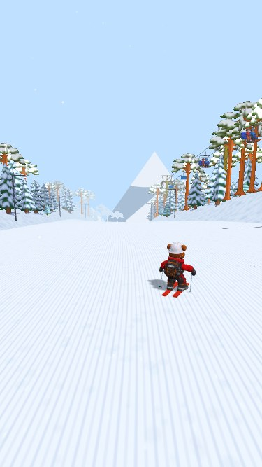
Мишаня / поворот на лыжахТот же участок в Unity
На отметке 200 м совпадают рельеф, положение ели, валуна и снеговика, ракурс и размер кадра. В браузере борозды и лес помогают видеть уклон. В Unity холодный цвет одежды заметнее, а тени яснее привязывают предметы к снегу; самой поверхности пока не хватает рисунка. Лес и дальний план в пилот не переносились.
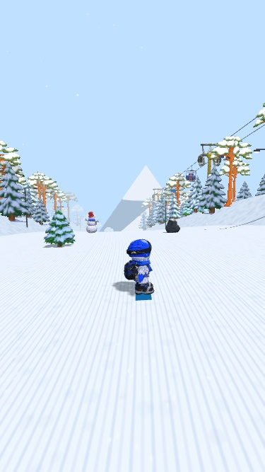
Браузер / игровой склон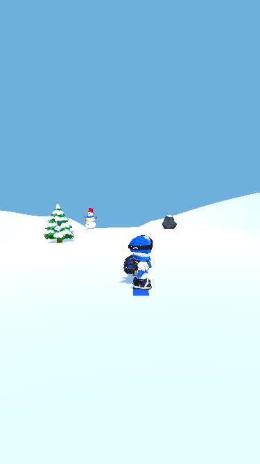
Unity 6.3 LTS / пилот URPКакие модели править дальше
На листе — 30 импортированных моделей и 29 объектов, которые игра строит кодом. У каждого есть роль, вид с игровой камеры и предложение по следующей правке. На склоне в первую очередь выделяются низкий бок валуна, линия отрыва трамплина и торец белой аптечки: все три могут сливаться со снегом.
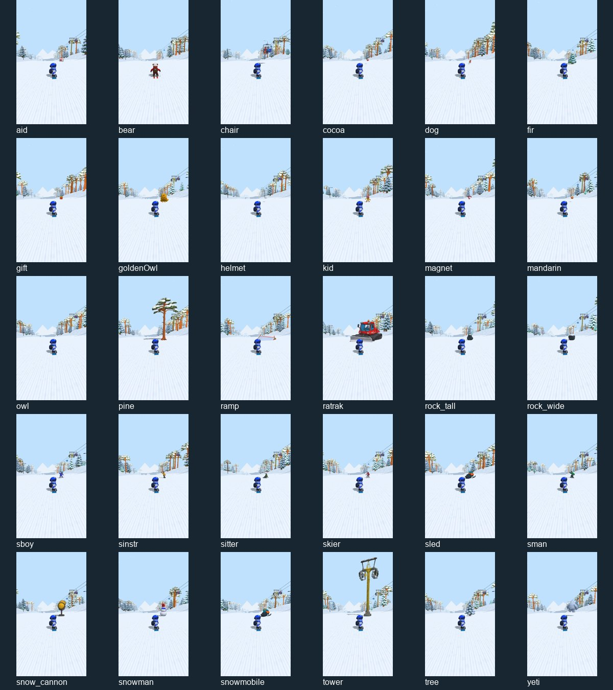